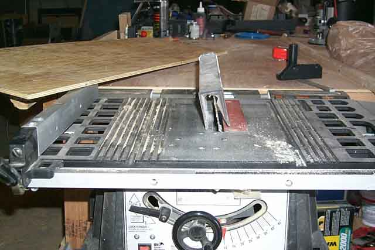
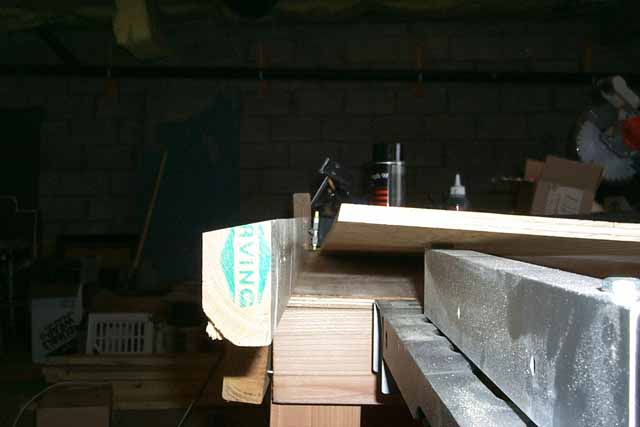
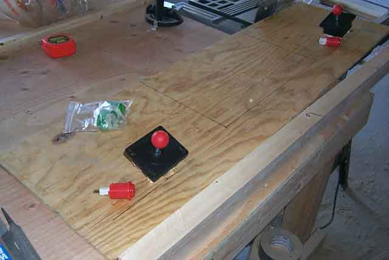

Okey Dokey.... so where are
we? Oh yeah, plywood, 2x4 all that good stuff...
Okay, so the 1/4" plywood is cut to a 14" x 48" size and now we need to
remember, the angle of the cut for the control panel area on the side panels
was 10 degrees, so everything will need to be cut accordingly.
This is where a good tablesaw with adjustable blade angle is going to be
necessary.

So set the blade to 10 degrees
and you'll need to cut the edge of the plywood so that it'll have a 10
degree edge on the front side and cut a piece of the 2"x4" to a length
of 48" and then cut a small part of the top section all the way down length-wise
at a 10 degree angle...

Don't mind that small angle
at the bottom of the 2x4, thats just a chunk missing from the wood, I will
fill that in with some wood putty later to even things out properly.
Now you need to mark out the placement of the equipment that will go ontop
of the plywood. I measured out the Colecovision and added
1" extra for the width and 2" extra for the depth (cords and such in the
back) and marked out where the pedestal would be for the Colecovision to
sit ontop of. Then measuring up 1" past where the 2x4
is going to sit underneath the front of the plywood I marked out for the
joystick bases and for the fire buttons.
